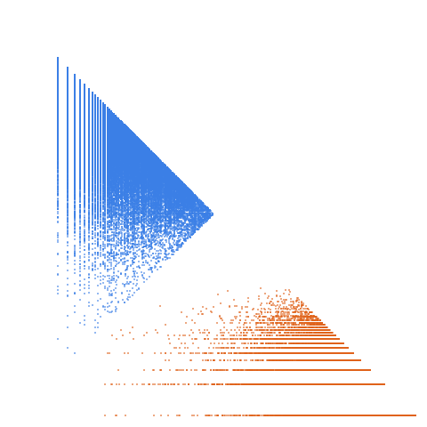

Single (or isolated or non-twin) primes: Primes p such that neither p-2 nor p+2 is prime

Open in the 3-D viewerA007510 on the OEIS
| Terms | 100,000 (n = 1 … 100,000) |
|---|---|
| Decomposable (a > 2d) | 99,998 |
| Level class, k > L | 26,112 · 26.11 % |
| Weight class, k ≤ L | 73,886 · 73.89 % |
| Ties, k = L | 12 |
| On the level line L = 1 | 8,286 |
| Forced level, l ≤ d² | 14 |
| Range of a(n) | 2 … 1,659,673 |
| Range of the jump d | 4 … 228 |
| Largest weight k, level L | 1,659,661, 331,929 |
Primes p with neither p - 2 nor p + 2 prime. Level share 26.11 %, a little above the primes' 23.00 %; L = 1 and L = 3 carry 60 % of the level class.
The decomposition
Every term of a strictly increasing sequence is written a(n) = k(n)·L(n) + d(n): the jump d = a(n+1) − a(n), the weight k the least divisor of a − d greater than d, the level L = (a − d)/k. A term decomposes when a > 2d; it is in the level class when k > L and in the weight class when k ≤ L. See decompwlj.com and arXiv:0711.0865.